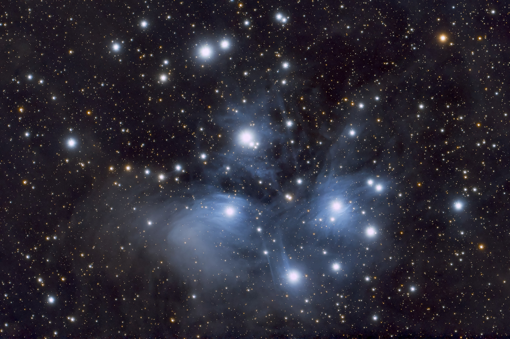
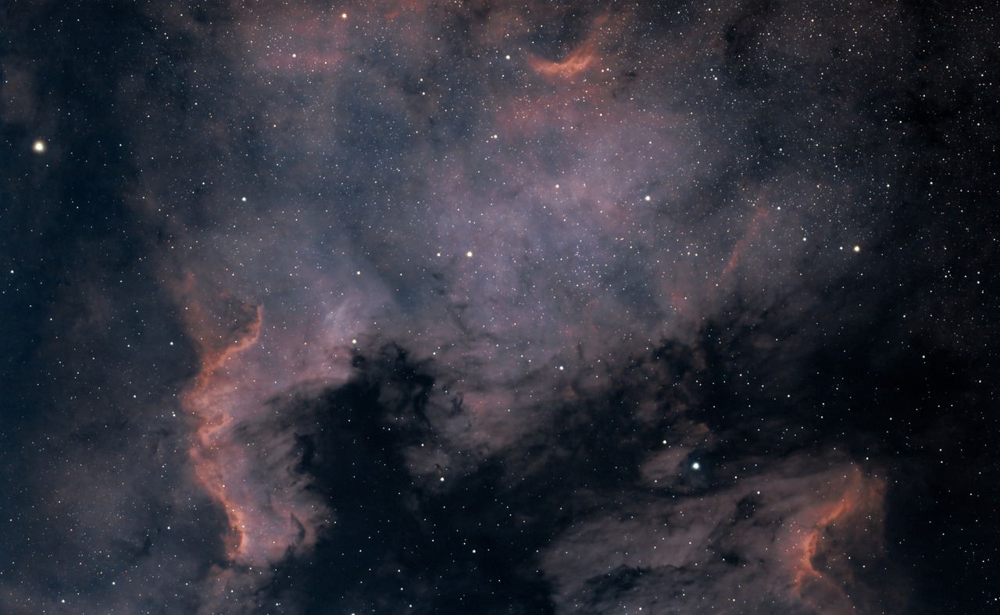
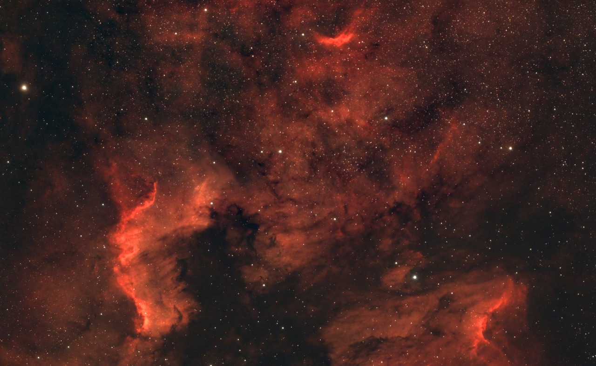

A nonprofit amateur astronomy collective exploring the cosmos through astrophotography, education, and affordable gear.
Washington Valley Observatory is an amateur astronomy collective on a mission to explore the cosmos through astrophotography and education. We specialize in capturing breathtaking images of deep-space objects using affordable, off-the-shelf telescopes and free, open-source software.
From helping a beginner find their first celestial object to teaming up with schools for STEM education, we are a place where anyone can connect with the stars. All of our imaging is done from light-polluted suburban skies in northern New Jersey, proving that remarkable results are possible anywhere.

Homegrown tools for the imaging community. The new Sky Atlas is a full planetarium in the browser: 41,000 stars to magnitude 8, three thousand deep-sky objects, planets and lunar phase on a sky you can scrub through time, with survey imagery fading in as you zoom and one click to carry any target into the FOV Viewer. The FOV Viewer frames any target over real survey imagery: resolve it by name, compare rigs side by side, then copy the coordinates straight into ASIAir or NINA. The Sky Conditions Planner scrubs forecast cloud cover across a live map, hour by hour into the future, with seeing and transparency estimates, darkness windows and moonrise for any site. The new Night Planner lays one night out hour by hour, with darkness, cloud, seeing, moonlight and dew side by side against your target’s altitude, then picks the best window and tells you when to switch on the dew heater. Polar Align shows where Polaris (or σ Octantis down south) sits on your polar scope’s reticle, live, for your site. The Sampling Calculator matches a camera to a telescope and draws the star on your actual pixel grid. And the new Astro Calculators hub answers the rest: sub-exposure length for your sky, backfocus chains, focus zones, untracked limits, planetary Barlow picks, plus moon-interference and polar-alignment advisors.
One target, three framings. The North America Nebula sprawls across more than four full moons of sky in Cygnus — big enough that every focal length tells a different story about it. Drag the slider to trade oxygen for hydrogen.


Every photon in these images crossed the void of space to land on a sensor in a suburban New Jersey backyard. Click any image to explore.
Nine active imaging stations, each optimized for a specific use case, plus the retired rigs that earned their keep. Sensors now span the IMX585 platform and APS-C.